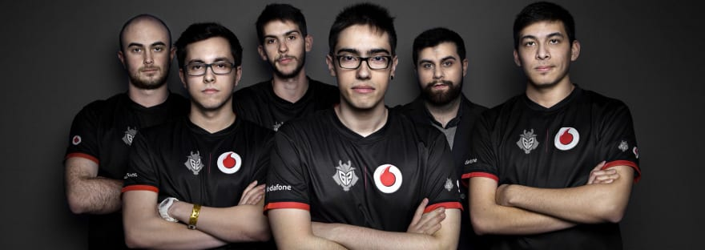

-PRESENTACION-
¿Quiénes somos?
Somos una web comprometida con brindar la mayor satisfacción a nuestros clientes. MULTIJUEGOS es una empresa dedicada a daros la mejor información sobre la actualidad en el mundo gamer para PC, PS4 y XBOX, consolas, accesorios de juegos, etc.
Tenemos elementos para hacer mas cómoda la experiencia de juego y ayudarte a resolver las dudas sobre los juegos que buscas.
Buscamos satisfacer las necesidades de las personas interesadas en los videojuegos y artículos de novedad, prestandoles el mejor servicio por parte de todo el personal de la web, manteniendo siempre actualizado nuestro catálogo de juegos y artículos para las diferentes plataformas.
-JUEGO DEL MES DE NOVIEMBRE-